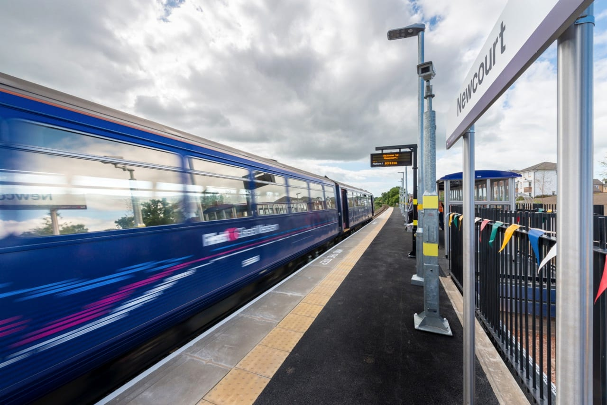
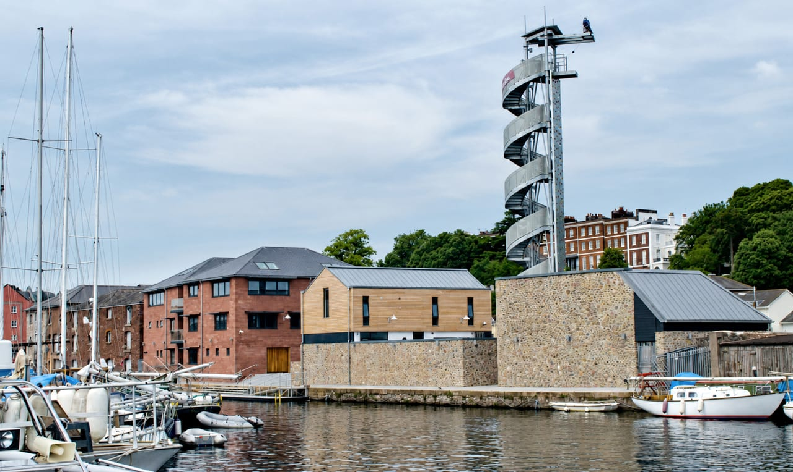
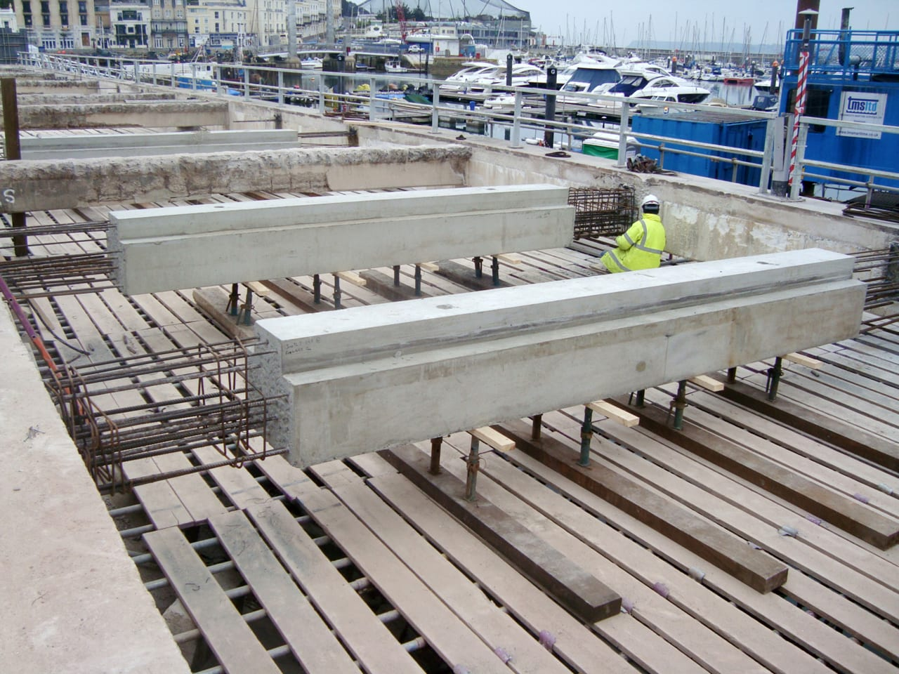
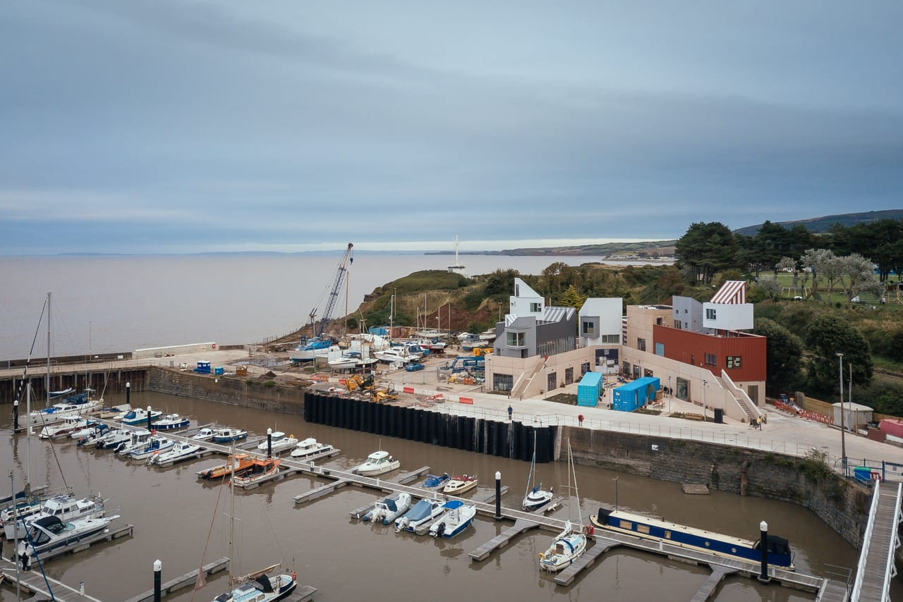

Since 1988 we have taken on thousands of jobs across Devon and the South West, from house extensions and new buildings to temporary works, sea walls and railway bridges.
The projects on this site are a few examples from that work.
About the practice- Buildings
Houses, flats, schools, healthcare, commercial, industrial and leisure buildings, in steel, concrete, masonry and timber.
- Extensions and alterations
Extensions, loft and barn conversions, removed walls and new openings, including listed and historic buildings.
- Foundations and ground
Piled and raft foundations, underpinning, basements, retaining walls and unstable slopes.
- Civil engineering
Roads, car parks and adoptable highways, drainage and flood risk, culverts and bridges.
- Marine and coastal
Sea walls and coastal defences, harbours, quays and slipways, pontoons and marinas.
- Temporary works
Propping and needling, piling and crane platforms, excavation support, façade retention and demolition sequencing.
- Surveys and reports
Structural surveys, reports for buyers, subsidence, insurance claims, fire damage and dangerous structures.
- Rail
Structures, earthworks and maintenance for Network Rail and its contractors.
- Contracts and expert witness
Contract documents, tender packages, contract administration, expert witness work and disputes.
Selected projects
All projects
Newcourt Station
Exeter
Platform structures beside a live railway

Haven Banks Outdoor Education Centre
Exeter
Steel frames on piles beside the canal

Noss on Dart
Dartmouth
Temporary works and pumping station input

Princess Promenade
Torquay
Promenade deck replacement

East Quay
Watchet
Temporary works for Midas Construction
Who we work for
Local authorities, NHS trusts, Network Rail, housing associations, civils and building contractors, utilities contractors, developers, architects, loss adjusters and insurers, police authorities, solicitors and homeowners.